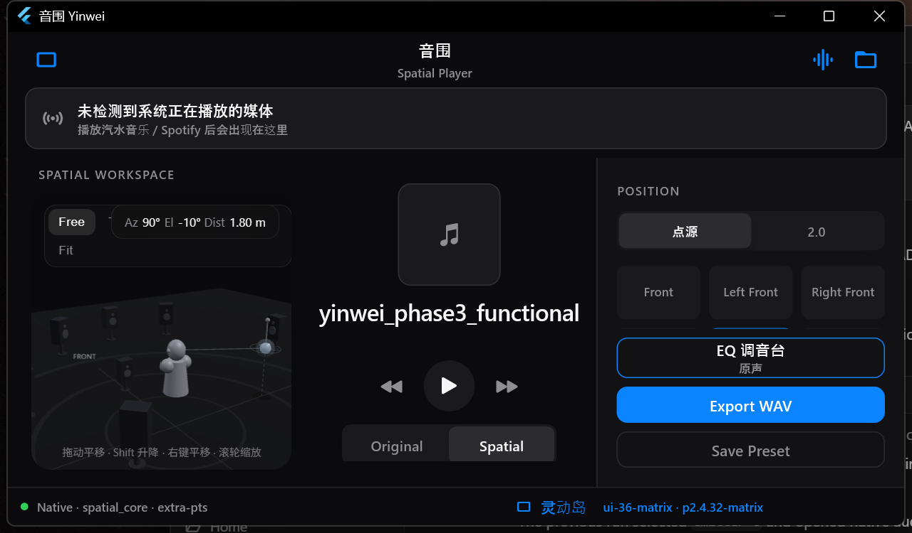
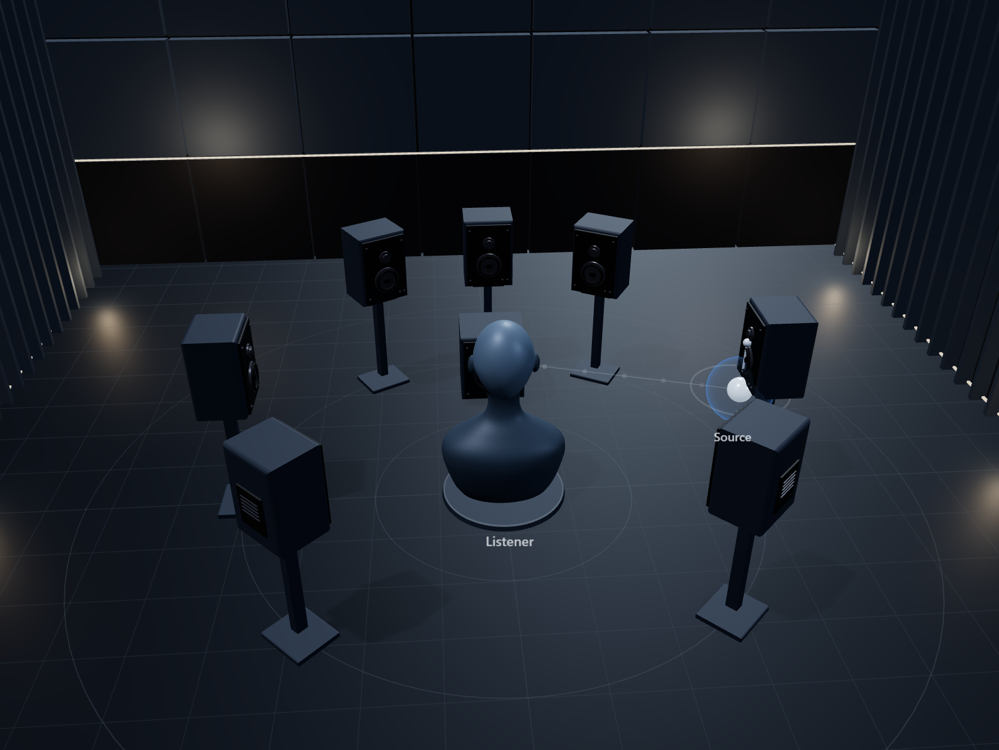

0° is front of the listener. Positive azimuth is to the right. This control is a visual explanation only; it does not play audio.
音围 · Yinwei
Turn ordinary audio into space.
把普通声音，放进空间。Yinwei is a local spatial-audio workstation that processes audio using HRTF and places sound in a controllable 3D listening space.
Spatial Audio
HRTF-based rendering places a source around the listener. You control azimuth, elevation, and distance, then choose Fixed or Orbit motion. Stereo and array layouts are available where the workstation supports them.
HRTF
Head-related transfer functions render direction and distance over headphones through spatial_core.
Fixed / Orbit
Hold a pose, or let the source move continuously around the listening space.
Layouts
Point source and stereo / array presentation where the current workstation build supports them.
Live Transfer
The idea is simple: sound that is already playing elsewhere can be brought into Yinwei, rendered through HRTF, and heard on headphones. Platforms are not at feature parity.
Music app / browser
→
Yinwei
→
spatial_core
→
HRTF
→
Headphones
Live Transfer
Windows can present current Live Transfer: a playing session is captured and passed through local spatial rendering. This is the current desktop path.
External playback capture validation
Android Live Transfer Preview. A1 currently proves MediaProjection
→ AudioPlaybackCapture → PCM diagnostics. It does not output
spatialized external audio. A2 / spatial_core
connection has not started.
Development status
iOS Live Transfer is not complete. Current work is a ScreenCaptureKit capture probe. Unsigned CI builds are developer artifacts, not an App Store release.
Local, offline processing
Yinwei’s DSP runs on the device. Core processing is
audio → spatial_core → HRTF → output. It does not
require cloud processing. Downloaded or local media can be
processed without Wi-Fi or mobile data where the source platform
permits playback or capture.
Third-party streaming apps and DRM-protected catalogs can still impose their own playback or capture limits. Yinwei does not claim to bypass those policies.
On-device path
Open a local file, preview Original vs Spatial, move the source, and export a WAV — without uploading PCM for DSP.
Audio
→
spatial_core
→
HRTF
→
Output
Professional workspace
A dark, restrained workstation: 3D room, listener, spatial source, array / speaker controls, and realtime Original / Spatial comparison.


Privacy
Audio processing is local. Yinwei does not need to upload captured PCM to a cloud service for DSP.
Download
Only real, currently available packages are linked. Other platforms stay visible so you can see status without fake buttons.
Windows
Current desktop workstation with local HRTF and Live Transfer.
No public installer is published yet.
Android
Android A1 Preview — external playback capture validation.
Download APKNot a production release. Does not spatialize external audio. Requires Android 10+ for playback capture.
iPhone / iPad
iOS Live Transfer is not complete. Unsigned CI IPAs must be signed before install.
No public iOS download on this site.
macOS
A downloadable macOS build is not available yet.
In development